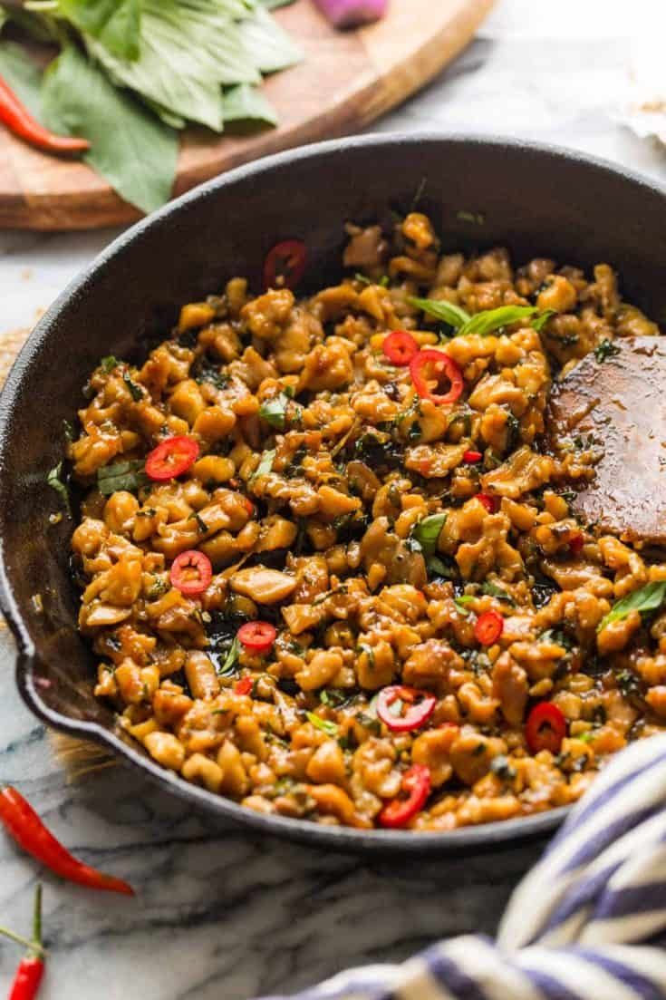

Thai Basil Chicken (Pad Gra Prow)

Description
This dish is a very easy to make Thai dish for anytime in the day. The mixture of savory, sweet, and spicy flavors is sure to make this recipe one in your weekly routine!
The way to say or order this dish at a thai recipe is "Pad Gra Prow" and is considered of the most popular thai dishes, in the US or even Thailand!
Ingredients
- 200g of minced chicken (or pork!)
- 5 Thai Chilis
- 1 Tbps of minced Garlic
- 1 Tbps of Fish Sauce
- 1 Tbps of Soy Sauce
- 1/2 Tbps of Oyster Sauce
- 2 Tbps of Water
- handful of thai basil
- 2 Cups of Rice to serve
- 1 egg
Steps
- Grind together the Garlic and thai peppers in a mortar and pestal
- Put oil in a pan and add the grinded mixture on high heat
- Add you chicken once the garlic becomes aromatic
- Cook the chicken about 90% of the way, and add your sauces and water
- Cook until chicken is done, and about half the sauce is evaporated
- turn heat off and throw basil and mix until wilted
- fry egg, and serve both chicken and egg on top of rice. Enjoy!